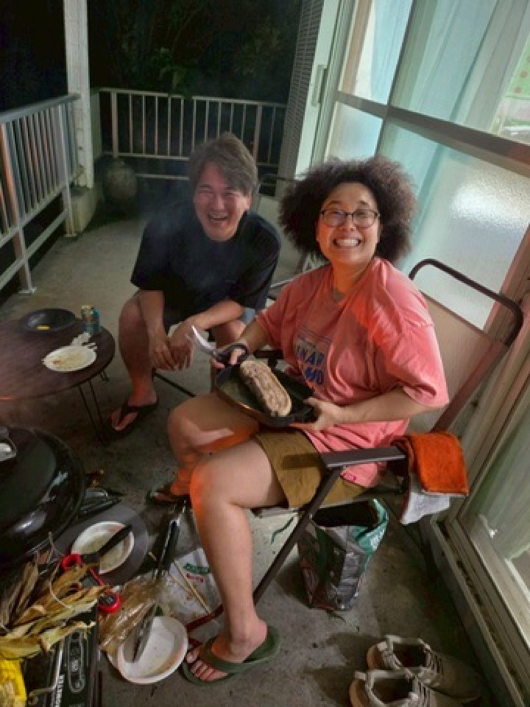
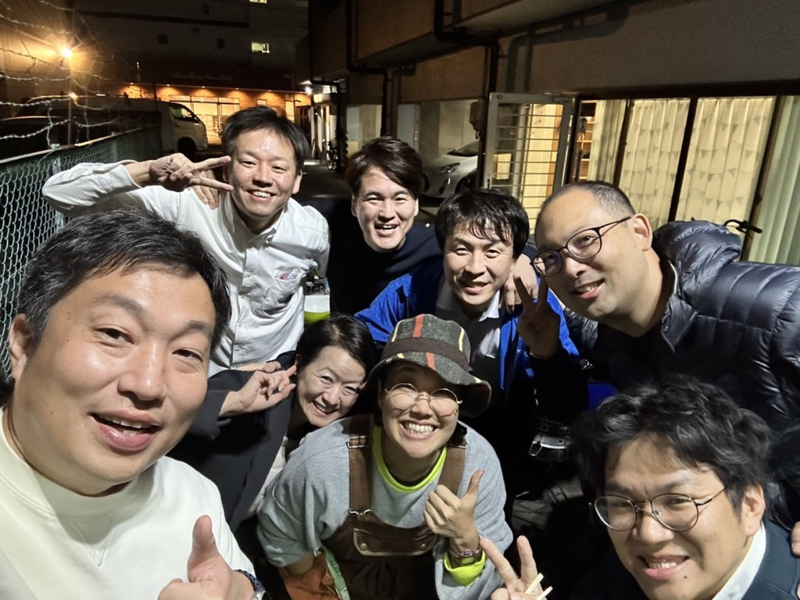
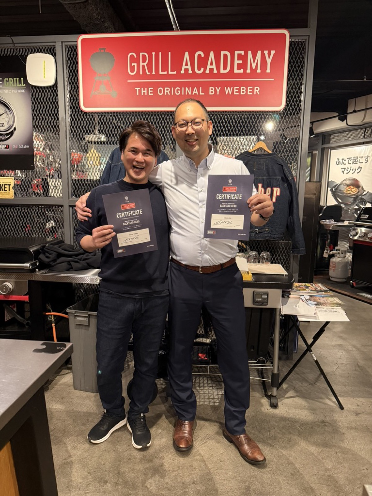
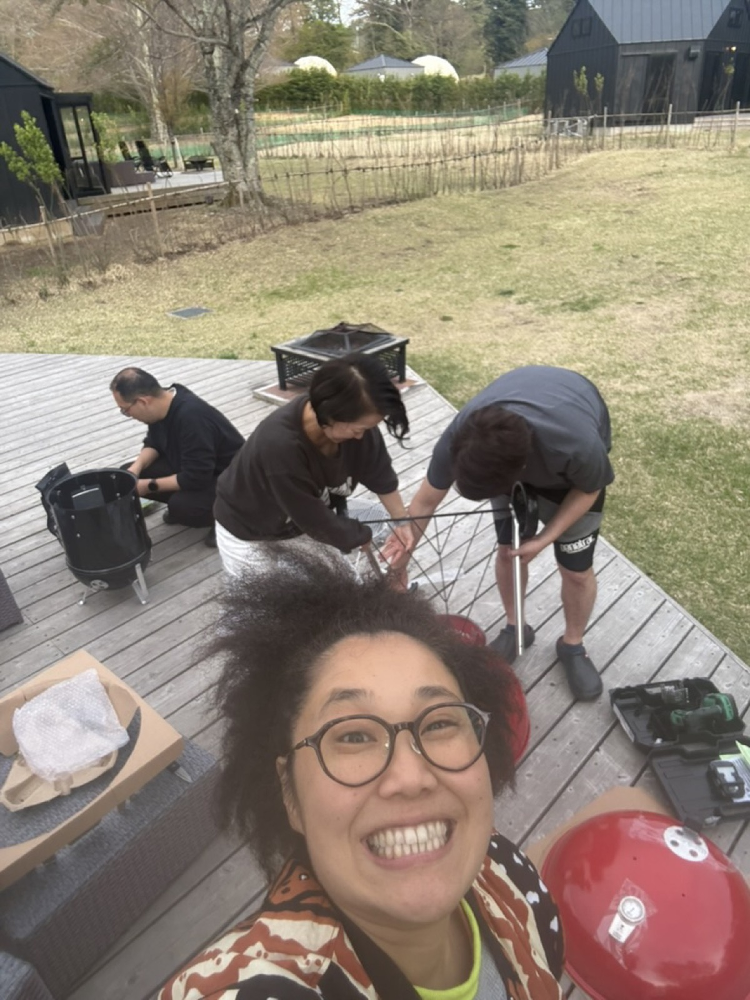
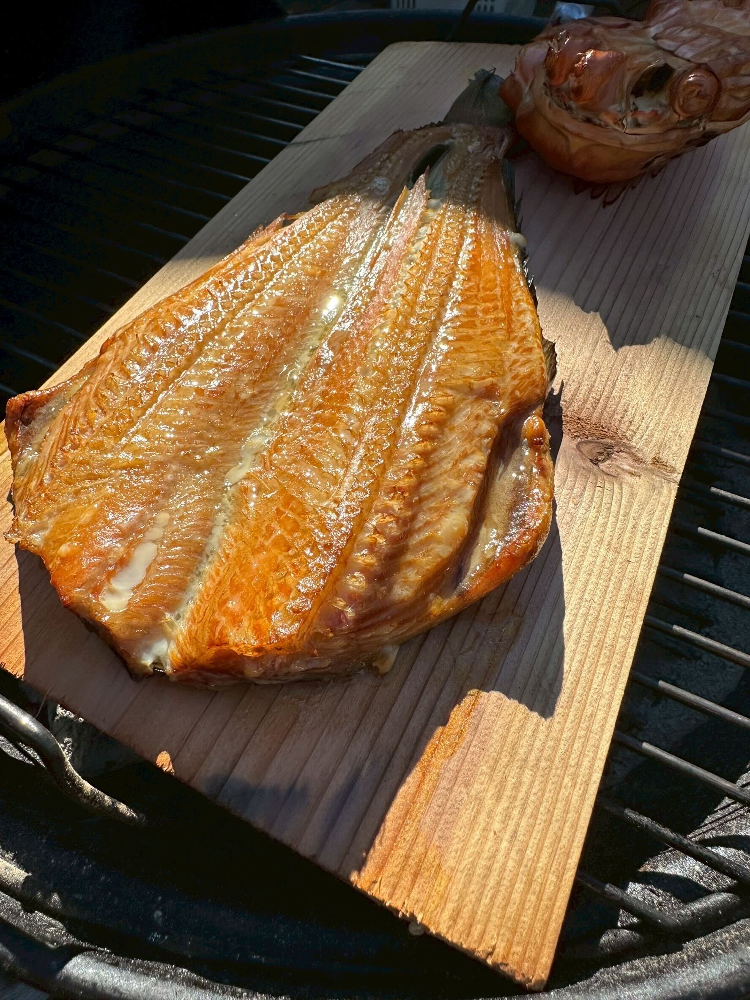
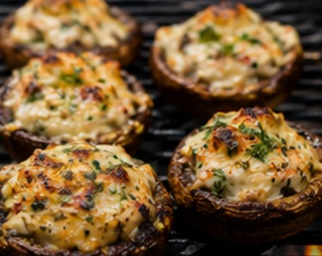
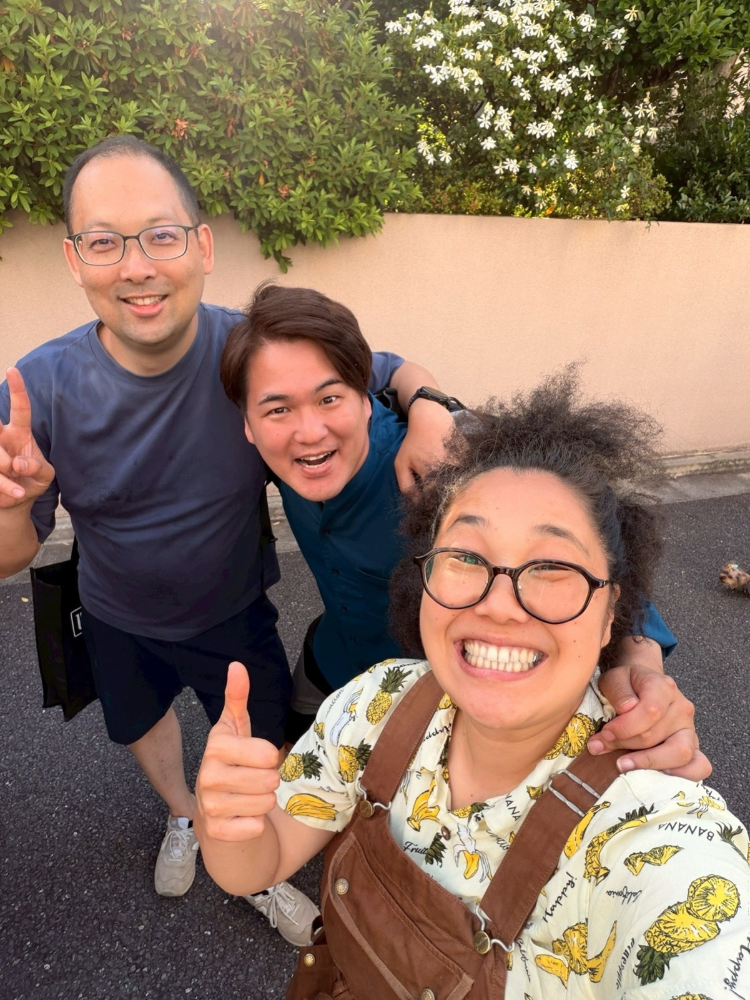
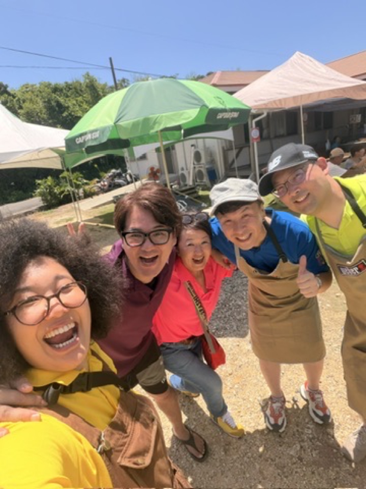

OUR STORY
火を囲む文化を、
はじめた3人。
一度の食卓から、ここまで来た。
第1章：1泊2日、それだけの出会い2024.11.30〜
正直に言うと、山ちゃんはBBQが得意ではなかった。真夏の暑い日に、数十名が集まって外で焼肉を焼く。楽しい話はする。仲間とも会える。それでも心のどこかで、冷房の効いた部屋できちんと美味しい肉を味わうほうがいいんじゃないか——ずっとそう思っていた。この物語は、その正直な告白から始まる。
3人が出会ったのは、あるリーダーシップ研修の1泊2日合宿。2024年11月30日のことだ。固定観念を超えて自己変容を促す、シンプルだがハードなプログラムだった。自分が何を大切にしてきたか、何を大切にしたいふりをしてきたか——そういうものが強制的にあぶり出されていく。逃げ場のないカリキュラムだ。年齢はほぼ同世代。1泊2日という短い時間の中で、3人は驚くほど自然に意気投合した。
その後、続編の9ヶ月研修に進んだ。期間中に1泊2日の合宿が3回。回を重ねるたびに、本当に大切にしたいものが、自分の中からあぶり出されていく。仕事の顔でも、家庭の顔でもない、もう一段深いところにある自分に触れる時間だった。振り返れば、この場で3人が出会えたこと自体が奇跡だったと山ちゃんは思っている。まだこのとき、3人の誰も、この先にバーベキューが待っているとは知らない。

第2章：「感動を超越すると、人はこんなに幸せになるのか」2025.7.12
続編研修の最初のリトリートを終えたあと、山ちゃんは娘と2人で、与論島へ1泊2日の弾丸旅行に出た。2025年7月12日。そこで、あんちゃんのBBQを初めて食べた。
先に書いた通り、山ちゃんはもともとBBQが得意ではない。むしろ苦手意識のほうが強かった。冷房の効いた部屋で食べる方がいい、と本気で思っていた人間だ。その前提を、あんちゃんのBBQは根こそぎ超越してきた。肉も、魚も、野菜も、果物も——どれをとっても、これまで体験したことのない味だった。「おいしい」という文字では語り尽くせない。おいしいという言葉の、その先にある何かだった。
蓋を閉めた炭のグリル。丁寧な下味。低温でじっくり通していく火。ごく普通の食材が、異常なほど美味しくなっていく。気がつくと、いつもの自分とは少し違う世界に入っている——山ちゃんは、そんな感覚を覚えた。感動を超越すると、人はこんなに幸せになるのか。それを、頭ではなく体で知った日だった。
大袈裟に聞こえるかもしれない。でも山ちゃんにとっては、そのくらい重要な一日だった。BBQが苦手だった自分が、この日を境に少しずつ変わっていく。その最初の一歩が、ここにある。

第3章：岐阜への遠征と、うえたくの初体験2025年夏の終わり〜秋
夏の終わりから秋にかけて、今度は3人で車に乗って岐阜へ向かった。うえたくにとって、あんちゃんのBBQは初めての体験だった。
リーダーシップコースの最終回を控えていた時期でもあった。焼き上がりを待つ間、火を囲みながら、3人はそれぞれ思い思いの話をした。仕事のこと、これからのこと、研修で見えてきた自分のこと。日常の延長にあるようで、どこか特別な時間だった。
うえたくは、山ちゃんが与論島で味わったのと同じ感動をこの日に味わった。初めて口にする味、初めて味わう幸福感。そして山ちゃんにとっても、これが2回目でありながら、1回目とまったく同じ強度の感動だった。一度きりのマジックではなく、あんちゃんの火が本物である証拠を、山ちゃんはこのときに得た。
火のそばで話す言葉は、会議室で話す言葉と少し違う。それに気づいたのは、たぶんこの日が最初だった。役職も肩書きも関係なく、ただ火を待つ人間として並んでいる時間。そこで交わされる言葉には、余計な力みがなかった。

第4章：研修修了、そして遠征の日々2025.10〜12
2025年10月、9ヶ月間の研修が修了した。ここから、3人の関係はさらに熱を帯びていく。
10月、名古屋で修了仲間のBBQ会が開かれた。11月にも、大阪メンバーとの会が名古屋であった。山ちゃんとうえたくは、この2回とも東京から名古屋へ遠征している。どんな高級料理よりも、あんちゃんのBBQのほうが美味しかった。感動し、食べるだけで幸せになる。その体験を確かめに、2人はわざわざ足を運んでいた——それに気づいたのは、後になってからだった。目的地が名古屋だったのではない。目的地は、あんちゃんの火のそばだった。
年末、あんちゃんは毎冬恒例のオーストラリア行きに出発した。しばらく、あんちゃんのBBQが食べられない。その寂しさは、思っていた以上に大きかった。当たり前に受け取れていたものが、当たり前ではなくなる。その不在の時間が、3人に一つの心の転換をもたらした。
自分たちも学んで、あの感動を、自分たちの周りにも提供できるのではないか。提供してもらう側でずっといるのではなく、自分たちが提供する側に回る——その発想の芽が、あんちゃん不在の冬に生まれた。


第5章：最短ルートで、技術に変える2025.12〜2026.4
感動しただけでは、火は広がらない。あんちゃん、うえたく、山ちゃんの3人で、Weber Grill Academyの門を叩いた。
初級を2025年12月17日に。中級を2026年1月16日・18日に。上級を2026年4月9日に。山ちゃんとうえたくは、最短ルートの約4ヶ月で全課程を修了した。火の配置設計、中心温度の科学、コラーゲンがゼラチン化する温度帯、杉板・ラック・シールドの使い分け——毎回の受講と週末の実践を、ぜんぶ記録しながら積み上げた。
どっぷり浸かっていく中で、ある違和感が育っていった。こんなに素晴らしいのに、なぜ世の中に広まっていないのか。山ちゃんもうえたくも、ビジネスの第一線でやってきた人間だ。適切なサービスは、本来広まるべきだと思っている。自分の人生で最も感動したものの一つであるアメリカンBBQ——それも世界トップメーカーであるWeberのものが、これほど世の中に浸透していないというのは、素直に不思議だった。
2026年4月の時点では、まだその違和感は頭の片隅にある程度だった。答えを出すには早すぎた。だが、確実に何かが引っかかっていた。

第6章：1泊2日の対話と、5312026.5
2026年5月、3人はもう一度1泊2日で向き合った。テーマは「僕らが世の中に提供したいことは何か、世の中にどんなインパクトを起こしたいのか」。答えを探すというより、すでに自分たちの中にあるものに言葉を与える作業だった。

いちばん納得のいったひと言がある。
「飲みに行こう」が「バーベキューしよう」になる世の中を作る。
日本には、仕事終わりや休日に「飲みに行こう」と誘い合う文化がある。それ自体は、間違いなく素晴らしい文化だ。ただ、良い時間になるかどうかは、店や酒の内容、そのとき一緒にいる人次第でもある。当たり外れがある。一方であんちゃんのBBQは違った。味と体験そのものが、集まった人を感動させ、幸せにする。誰と行っても、その日の火が本物なら、幸せは約束されている。だから「飲みに行こう」が「バーベキューしよう」に置き換わっていけば、幸せのループがもっと確実に回る——3人はそこに、はっきりとした納得感を持った。
5月31日、新木場で「531」を開いた。友人招待制のバーベキュー会。朝の光がいい時間に火を入れて、夕方まで。多くを語らず、その場で受け取ってもらう——そういう趣旨の会だった。「焼かない。蒸す感じ」「普通のバーベキューと真逆」「ずっと食べていられる」。参加者の反応が、3人の確信を深めた日だった。

第7章：数字が教えてくれたこと2026.7
広げようとするほど、ひとつの問いにぶつかった。アメリカンBBQは何年も前から日本に入ってきているのに、なぜ浸透しないのか。認知度の問題なのか。誰かインフルエンサーが出てくれば解決するのか——3人は一度、そう考えていた。
2026年7月、そうではないという、圧倒的に大きな気づきがあった。Weberの世界売上比率で、日本は1%未満しかない。それだけを見れば認知度の話に見える。だが、BBQが浸透している国の肉と魚の摂取比率を調べていくと、まったく別の理由が見えてきた。アルゼンチンは約13倍、アメリカ・オーストラリア・ドイツなどは約5〜7倍。肉の摂取量が多い国は、塊肉を焼く食文化が根づいており、必然的にBBQに向いている。一方、日本はほぼ1対1で、米の摂取量は肉の3〜4倍にのぼる。日本は島国で山も多い、食の成り立ちがそもそも特殊な国なのだ。
つまり、アメリカンBBQをそのまま模倣しても、日本には根づかない。3人がアメリカンBBQに抱いているリスペクトは変わらない。それでも、肉に限らず魚・野菜・果物・ご当地の食材をどんどん活用する「日本に最適化されたBBQ」でなければ、この国では続いていかない。振り返れば、あんちゃんのメニューは、もともと肉が全体の半分程度だった。米国式の肉盛りではなく、最初から日本の食卓に合う配分で組まれていた。答えは、最初からあんちゃんの火の中にあった。


第8章：YORON BBQ、誕生2026.7.16
2026年7月16日、この日本に最適化されたバーベキューに、名前をつけた。YORON BBQ。
「飲みに行こう」よりも「バーベキューしよう」が合言葉として自然に出てくる土地。そして、あんちゃんがBBQを楽しんできた地・与論島へのリスペクト。名前の由来は、その両方だ。3人が目指すのは、一般的なBBQをただ広めることではない。日本に最適化され、日本でしか味わえないYORONバーベキューを、日本中に広めることだ。
目指すゴールは、日本の人口約1億2,000万人の3分の1、約4,000万人にYORONバーベキューという名前が届く世の中。名前さえ知ってもらえれば、興味を持ってもらえる——3人はそう信じている。年末年始に実家に集まるように、お盆に墓参りに行くように、GWに旅行に行くように。日本の暮らしの中にはもう、季節ごとに人が集まる型がいくつもある。その並びに「YORONバーベキューの日」を加えたい。その日には昔の仲間が久しぶりに集まって、日本中で火が上がる——そんな世界観を、3人は本気で描いている。
もともとBBQが得意ではなかった山ちゃんが、いま火を囲む文化をつくる側に回っている。それ自体が、あの日与論島で受け取った感動の証明だ。ただBBQを広げたいわけではない。3人が心から感動したもの、固定観念を超えたその先で本当の自分に戻れる場所、そして衣食住の中でもとりわけ普遍的な「食」というニーズを満たすもの——それを日本中に届けられれば、日本はもっと豊かに、もっと幸せになる。3人は、それを本気で望んでいる。


それは、あなたの知っている『バーベキュー』とは別の食べ物です。
——本場アメリカンBBQを、与論島から。